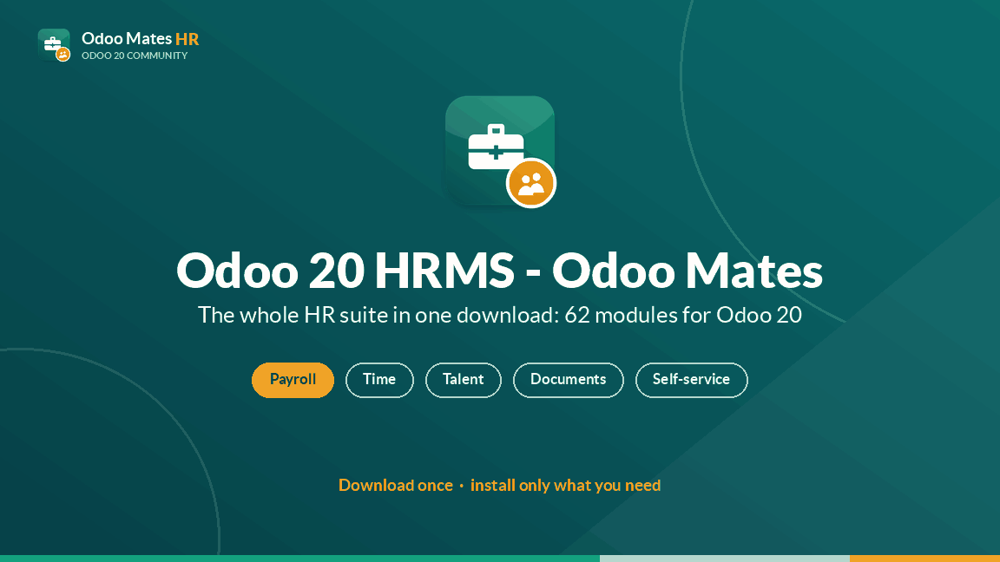
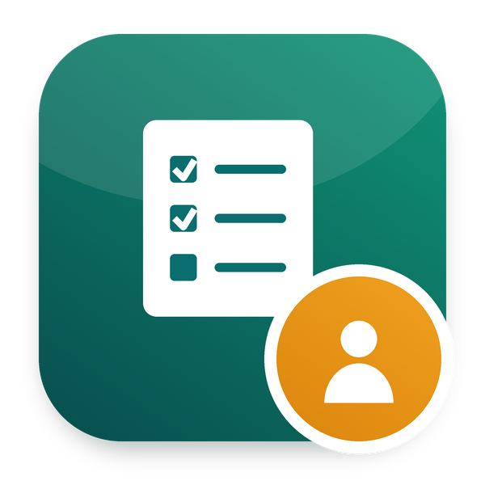

Odoo 20 HRMS - Odoo Mates brings every Odoo Mates HR app into your Odoo at once: payroll, loans, exits and gratuity, documents and signatures, appraisals, shifts, approvals and the employee portal. Nothing to hunt for, no missing dependency: install the apps you need today, and the next one is already there the day you need it.


New hires get ready before their first day, on the website
Part of Odoo 20 HRMS - Odoo Mates · Odoo 20 Community and Enterprise
Their details, emergency contact, bank account and IDs, given online
What they give next to what the employee has: apply it, or send it back
Their first day information and their buddy, on their welcome page
Works with Odoo 20 Community and Odoo 20 Enterprise.
om_hr_portal.
Odoo Mates HR is open source and grows with the people who use it. Every report, review, fix and translation is welcome. New to it? Ask, and we guide you.
i18n files of each module.github.com/odoomates/hr · odoomates@gmail.com
If you love it, let us know. Always your Odoo Mates.
Odoo Mates HR
The HR suite of Odoo Mates for Odoo 20: every module installs on its own, the links between them are bridges.
Support: odoomates@gmail.com